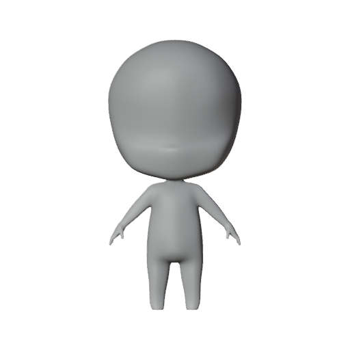
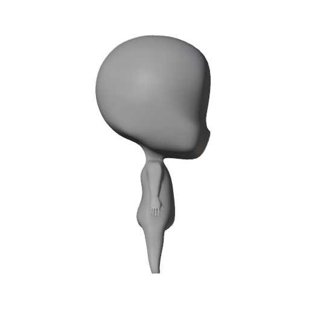

Q 版演员眼睛校准标注工具
这次只标注眼睛，不要标当前错误的眼睛，也不要重新标注骨骼。请把圆点拖到你希望最终眼睛中心的位置。
正面：左眼中心、右眼中心应放在脸内，不要放在头部轮廓外。
侧面：先把“眼球中心”放到头部内部，再把“虹彩朝向点”放到角色正面方向；本图角色正面朝右，所以朝向点通常在中心点右侧。最后把红色“头部前表面点”放在同一高度的头部轮廓线上，不能放到头外。
如果你不确定深度，优先保证眼球中心在头部内部，后续我会根据模型表面自动计算嵌入深度。
Front / 正面

Side / 侧面（角色正面朝右）

下载眼睛校准 JSON
重置参考点